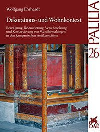

Nell'agosto del 1873 Mau pubblicò la sua rivoluzionaria scoperta: le pitture murali delle case di Pompei non erano databili agli ultimi venti o trent'anni prima che la città fosse sepolta dalle ceneri vesuviane nel 79 a.C., ma ad un periodo di 200 anni più lungo, durante il quale si sviluppò la cultura domestica prima di età tardo-ellenistica e poi di periodo imperiale. Fu allora che i contesti delle decorazioni furono separati sulla base dello stile. La motivazione però per la quale furono mantenute le decorazioni più antiche, parti delle quali avevano già quasi 200 anni, piuttosto che sostituirle con pitture più recenti non è stata affrontata fino ad ora.
Questo divario è chiuso nel lavoro qui presentato attraverso l'esame del contesto micro-storico delle pitture murali. Una strategia razionale si rende mano a mano evidente nel modo in cui gli antichi padroni di casa avrebbero decorato intere stanze o solo alcuni muri seguendo le mode più recenti. Nello stesso tempo venivano preservate e restaurate le decorazioni più antiche esistenti, fino ad unirle con elementi contemporanei in un apparentemente armoniosa e amalgamata composizione.
Come sempre, il volume include una sezione dettagliata dedicata al catalogo. Sono raccolti qui tutti i materiali che sono serviti come base delle argomentazioni o per valutare i contesti di decorazione in ogni abitazione. Questa sezione non riesce solo a superare i limiti economici di una pubblicazione stampata, ma anche quelli dovuti alla frammentazione a lungo andare inevitabile, visto il flusso di nuove pubblicazioni sugli antichi siti campani. Ciò ha portato alla scelta di renderla accessibile come catalogo online all'interno di Arachne. Il materiale è organizzato prima di tutto partendo dalla sua posizione, poi per numerazione o in base ai nomi moderni delle abitazioni. Le informazioni sulla decorazione di ogni singola stanza possono essere trovate nei relativi dati collegati.
Nel catalogo sono anche descritte le combinazioni dettagliate del materiale, sulle quali si basano le interpretazioni dei ritrovamenti pubblicate in Palilia 26. Queste singole voci possono essere aggiornate ogni volta che è necessario usando il database disponibile. Sono presenti in ogni caso i materiali imprescindibili, raccolti come quando sono venuti alla luce durante le prime fasi di scavo della città campana presso le case e i contesti delle decorazioni. I documenti possono essere sotto forma di articoli, libri, note e informazioni ottenute dalle foto e dai disegni. Il metodo di raccolta vale per tutto ciò che è relativo a ciascuna abitazione, anche se oggi sono prive degli originari paramenti decorativi: alcune quindi vengono catalogate anche se non sono presenti nel volume "Pompei: pitture e mosaici".